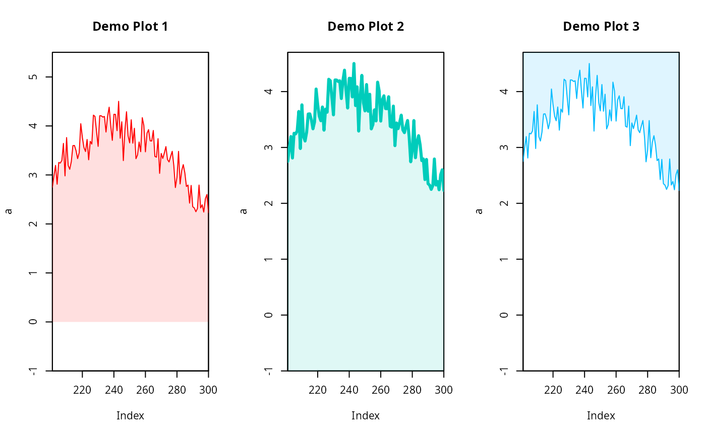

Helper function to plot a filled polygon based on a zoo
time series object. Automatic handling of missing values.
add_polygon(x, col = "#ff0000", lower.limit = 0, ...)an univariate zoo time series object.
character, a hex color (no alpha channel), default "#ff0000" (red).
numeric, the lower limit used to plot the polygon.
default is 0.
additional arguments forwarded to lines.
Based on input x a filled polygon is added to the
current plot. The color (col) is used to colorize the line,
a lighter version of the color is used to fill the polygon by adding
opacity.
If the input object x contains missing values (periods with
explicit NA values) the polygon will be interrupted and
gaps will be plotted.
library("zoo")
# Create a time series object
set.seed(3)
a <- zoo(sin(1:100/80*pi) + 3 + rnorm(100, 0, 0.3), 201:300)
# Plot
par(mfrow = c(1,3))
plot(a, type = "n", main = "Demo Plot 1",
ylim = c(-1, max(a)+1), xaxs = "i", yaxs = "i")
add_polygon(a)
# Specify lower.limit to -1 (lower limit of our ylim),
# add different color, change line style.
plot(a, type = "n", main = "Demo Plot 2",
ylim = c(-1, max(a)+.2), xaxs = "i", yaxs = "i")
add_polygon(a, col = "#00CCBB", lower.limit = -1, lwd = 3)
# Using an "upper limit".
plot(a, type = "n", main = "Demo Plot 3",
ylim = c(-1, max(a)+.2), xaxs = "i", yaxs = "i")
add_polygon(a, col = "#00BBFF", lower.limit = par()$usr[4L])

# Make a copy and add some missing values
b <- a
b[2:10] <- NA
b[50:55] <- NA
b[70] <- NA
# Plot
par(mfrow = c(1,1))
# Same as "Demo Plot 2" with the time series which
# contains missing values (b).
plot(b, type = "n", main = "Demo Plot 2 With Missing Values",
ylim = c(-1, max(b, na.rm = TRUE)+.2), xaxs = "i", yaxs = "i")
add_polygon(b, col = "#00CCBB", lower.limit = -1, lwd = 3)